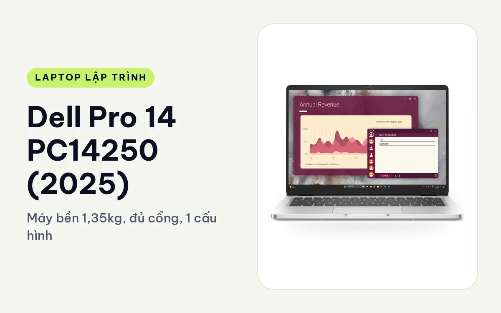
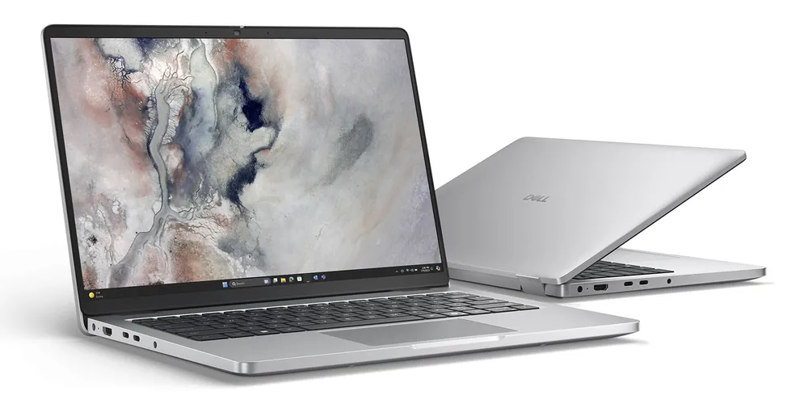
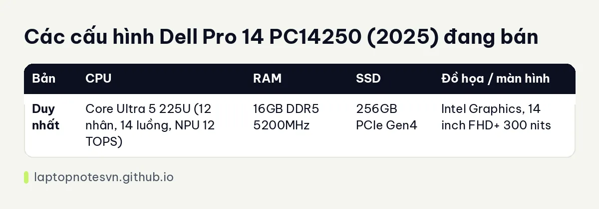

Dell Pro 14 PC14250 (2025) cho lập trình - Máy bền 1,35kg, đủ cổng, 1 cấu hình

Dell Pro 14 PC14250 (2025) là laptop doanh nghiệp 14 inch nặng khởi điểm 1,35kg, đủ cổng, bền chuẩn MIL-STD và được làm cho máy chạy ổn định cả ngày. Đây không phải máy mạnh nhất cho dân code, nhưng là kiểu máy văn phòng tử tế: không cầu kỳ, ít lỗi vặt, cắm màn hình và mạng dây không cần hub.
Hưng Phát Laptop hiện bán đúng 1 cấu hình, với ổ 256GB. Phần dưới nói rõ ai nên mua cấu hình đó và ai nên đi tiếp sang máy khác.
Thiết kế, thực dụng kiểu máy công ty
Kích thước 313.7 x 225.3 x 18.89-20,37mm. Viền màn hình mỏng hơn thế hệ trước, nhờ đó màn hình có thêm khoảng 5% diện tích hiển thị trong cùng thân máy. Dell cho hai lựa chọn vỏ: Magnetite nhám màu đen, và Platinum Silver bóng kim loại (chỉ ở bản Core Ultra 200U). Máy bán ở đây là màu Magnetite.
Phần vỏ có tới 50% nhựa tái chế ở viền, kê tay và mặt đáy, đạt EPEAT Gold, ENERGY STAR và TCO. Cổng USB-C dạng module, Dell nói chịu xoắn tốt hơn 4 lần và chịu va đập tốt hơn 33 lần so với thiết kế truyền thống, đồng thời dễ thay khi hỏng. Với dân code hay cắm rút cáp, chi tiết này có ích hơn nhiều người nghĩ.
Màn hình 14 inch FHD+ (1920 x 1200) IPS, tỷ lệ 16:10, 60Hz, không cảm ứng, chống chói, 300 nits. Đây là panel văn phòng, đủ để đọc code nhưng không sáng bằng các dòng cao hơn, nên làm việc cạnh cửa sổ nắng sẽ hơi khó. Bàn phím có đèn nền và một phím Copilot riêng. Camera FHD+ hồng ngoại cho Windows Hello.
Cổng kết nối là điểm mạnh: Thunderbolt 4, USB-C 3.2 Gen 2, hai cổng USB-A 3.2 Gen 1 (một cổng PowerShare), HDMI 2.1 và RJ45. Wi-Fi 6E kèm Bluetooth 5.4. Trang sản phẩm ghi có đường nâng cấp lên Wi-Fi 7 và WWAN 4G/5G nhưng ở bản đang bán, bạn nên hỏi lại cửa hàng trước khi mua.
Mang đi hằng ngày
1,35kg và dày chừng 19-20mm là cỡ máy bỏ vào cặp tài liệu không thấy nặng. Pin 3 cell 55Wh, Dell công bố khoảng 10.3 giờ khi dùng văn phòng; chạy IDE với vài container thì ngắn hơn. Máy sạc bằng adapter 65W USB-C, tương thích nhiều thiết bị, tiện khi bạn đã có cục sạc USB-C chung cho điện thoại. Có ExpressCharge và ExpressCharge Boost để nạp nhanh.

Tản nhiệt được Dell mô tả giảm tiếng ồn đến 30%, hợp văn phòng yên tĩnh hoặc phòng họp. Tôi không có số đo nhiệt thực tế, nên chỉ nói được là máy dùng chip tiết kiệm điện dòng U, nhiệt tạo ra không nhiều.
Có 1 cấu hình
| Bản | CPU | RAM | SSD | Đồ họa / màn hình |
|---|---|---|---|---|
| Duy nhất | Core Ultra 5 225U (12 nhân, 14 luồng, NPU 12 TOPS) | 16GB DDR5 5200MHz | 256GB PCIe Gen4 | Intel Graphics, 14 inch FHD+ 300 nits |
Core Ultra 5 225U / 16GB / 256GB, hợp việc gì
Cấu hình này hợp rõ nhất với lập trình web front-end, script Python, Node.js, học Java hoặc C#, quản trị hệ thống qua SSH và các việc dev nhẹ ở doanh nghiệp, nơi máy chủ để đâu đó còn laptop chỉ là chỗ viết và chạy thử. Chip 12 nhân dòng U đủ cho những việc này, và 16GB RAM cho phép mở IDE cùng trình duyệt nhiều tab thoải mái. Ổ 256GB là điểm cần cân nhắc: image Docker, thư viện node_modules và dữ liệu thử nhanh đầy, nên máy hợp người để dự án chính trên server hoặc cloud. Chi tiết về mức RAM nên có xem ở bài lập trình viên cần bao nhiêu RAM.

Hạn chế nằm ở ổ 256GB. Docker image, node_modules và bộ cài IDE sẽ ăn đầy ổ khá nhanh, nên bạn cần dọn thường xuyên hoặc dùng ổ ngoài cắm qua USB-C. Mô tả trên trang sản phẩm có nhắc dòng máy nâng được RAM tới 32GB và SSD tới 1TB, nhưng với cấu hình đang bán, hãy xác nhận cụ thể với cửa hàng trước khi tính chuyện nâng.
Không nên chọn máy này nếu bạn làm Android Studio kèm emulator thường xuyên, chạy nhiều container nặng, huấn luyện mô hình AI hoặc game dev. Các việc đó cần RAM lớn hơn, chip dòng H và có khi cần card rời.
Nên mua hay chọn máy khác
Dell Pro 14 hợp người cần một chiếc máy bền, đủ cổng, ít phải mang hub, dùng cho code web và công việc văn phòng. Nếu ưu tiên nhẹ và màn hình đẹp hơn, hãy xem Dell XPS 13 DX13260, với nhiều cấu hình hơn và màn 2.5K. Còn nếu bạn cần cổng sẵn, vỏ bền và cấu hình vừa phải, Dell Pro 14 PC14250 (2025) là một lựa chọn hợp lý.
Đăng ngày 08/11/2026